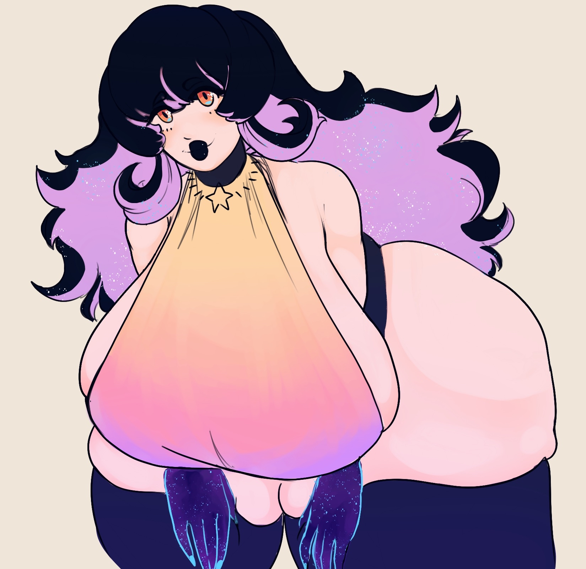
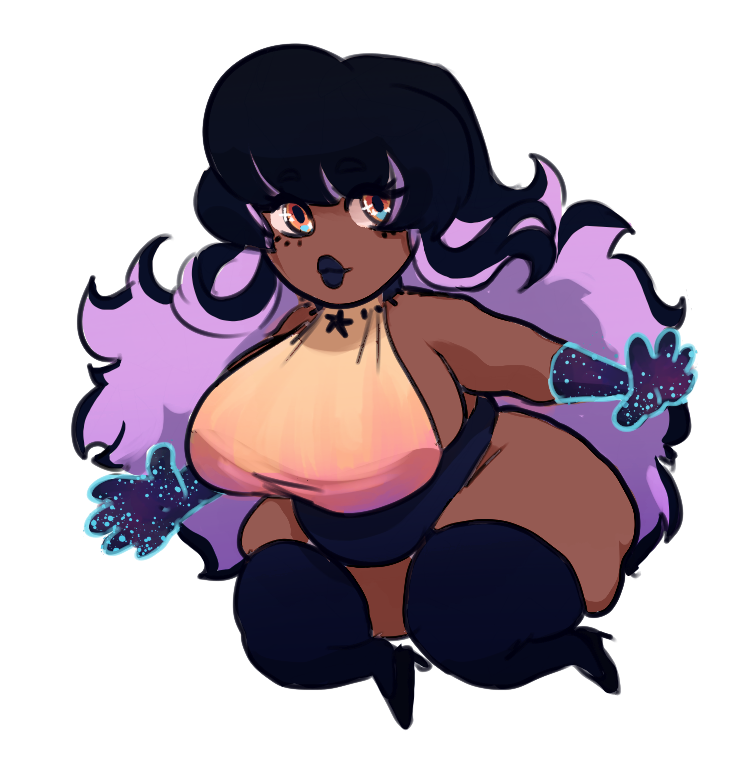

Moth Holiday

Quiet, small, unassuming (other than the hair… and the clothes…), that’s the Moth you’d pass on the street. Personable and smart (if not just a chronic overthinker), that’s the Moth their friends know. Friends they know through stumbling upon The Hotel in their time of distress. Friends that they work with, freelancing, hunting Anomalies.
The Incident in their family justified their existing anxiety, made it worse, and now they’d
rather be like a quiet, soft breeze and flow around trouble, and avoid even the mundane things
they don’t like. But that doesn’t pay the bills. Carefully picking company and friends now, and
rarely exiting the safety of their circle. It’s better that way. Well, except for when they have
to actually confront things with violence out of necessity. They’d rather not, but they are
skilled at causing harm.
It’s uncomfortable.
They do it anyway. That pays the bills.
That’s life.

Relations
References

Art